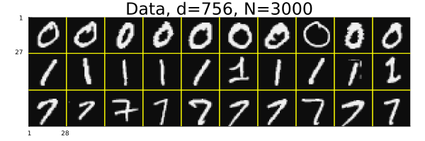
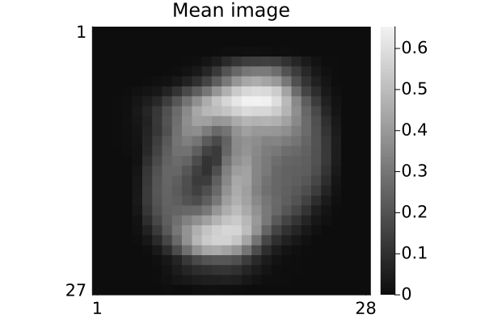
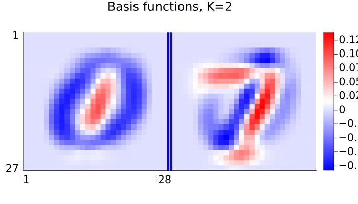
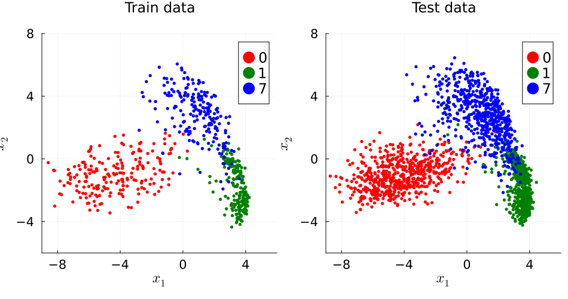
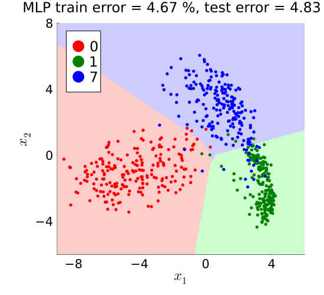

Multilayer perceptron (MLP) demo
Illustrate Multilayer perceptron (MLP) for multiclass MNIST hand-written digit images in Julia. This version uses basic Julia without calling any machine learning libraries.
This page comes from a single Julia file: mlp3.jl.
You can access the source code for such Julia documentation using the 'Edit on GitHub' link in the top right. You can view the corresponding notebook in nbviewer here: mlp3.ipynb, or open it in binder here: mlp3.ipynb.
Setup
Add the Julia packages used in this demo. Change false to true in the following code block if you are using any of the following packages for the first time.
if false
import Pkg
Pkg.add([
"ADTypes"
"ForwardDiff"
"InteractiveUtils"
"LaTeXStrings"
"LinearAlgebra"
"MIRTjim"
"MLDatasets"
"Optim"
"Plots"
"Statistics"
])
endTell Julia to use the following packages. Run Pkg.add() in the preceding code block first, if needed.
using ADTypes: AutoForwardDiff
import ForwardDiff
using InteractiveUtils: versioninfo
using LaTeXStrings: @L_str, latexstring
using LinearAlgebra: svd, det
using MIRTjim: jim, prompt
using MLDatasets: MNIST
using Optim: optimize, LBFGS, minimizer
using Plots: default, gui, savefig, RGB, cgrad, twinx
using Plots: plot, plot!, scatter!, histogram!, contour!
using Random: randperm, seed!
using Statistics: mean
default(); default(markersize=3, markerstrokecolor=:auto, label="",
tickfontsize=14, labelfontsize=16, legendfontsize=16, titlefontsize=16)The following line is helpful when running this file as a script; this way it will prompt user to hit a key after each figure is displayed.
isinteractive() ? jim(:prompt, true) : prompt(:draw);Load data
Read the MNIST data for some handwritten digits. This code will automatically download the data from web if needed and put it in a folder like: ~/.julia/datadeps/MNIST/.
if !@isdefined(data) || true
if !@isdefined(digitn)
digitn = [0, 1, 7]
end
digit_str = join(digitn); # string for file names
isinteractive() || (ENV["DATADEPS_ALWAYS_ACCEPT"] = true) # avoid prompt
dataset = MNIST(Float32, :train)
nrep = 1000 # how many of each digit
# function to extract the 1st `nrep` examples of digit n:
data = n -> dataset.features[:,:,findall(==(n), dataset.targets)[1:nrep]]
data = cat(dims=4, data.(digitn)...)
labels = vcat([fill(d, nrep) for d in digitn]...) # to check later
nx, ny, nrep, ndigit = size(data)
data = data[:,2:ny,:,:] # make images non-square to force debug
ny = size(data,2)
size(data) # (nx, ny, nrep, ndigit)
end(28, 27, 1000, 3)Look at some of the image data
pd = jim(data[:,:,1:10,:], "Data, d=$(nx*ny), N=$(nrep*ndigit)";
colorbar = nothing, size = (600,200), tickfontsize = 6, ncol = 10)
# savefig(pd, "mlp$digit_str-digit.pdf")
Partition data into train / validate / test
ntrain = 200
nvalid = 100
ntest1 = 600
seed!(0)
tmp = randperm(nrep)
itrain = (1:ntrain)
ivalid = (1:nvalid) .+ ntrain
itest1 = (1:ntest1) .+ (ntrain + nvalid)
dtrain = data[:,:,tmp[itrain],:]
dvalid = data[:,:,tmp[ivalid],:]
dtest1 = data[:,:,tmp[itest1],:];Sample mean of all training images:
dmean = sum(dtrain, dims = 3:4) / ntrain / ndigit
pm = jim(dmean; title="Mean image")
# savefig(pm, "mlp$digit_str-mean.pdf")
PCA-based dimensionality reduction
Use two components for easy visualization
X = reshape(dtrain .- dmean, nx*ny, :) # unfold
if !@isdefined(K)
K = 2
end
U = svd(X).U[:,1:K];Show basis vectors
tmp = reshape(U, nx, ny, K)
pu = jim(tmp; nrow=1, title="Basis functions, K=$K", color = :bwr,
size = (700, K==2 ? 400 : 150), colorbar_ticks = [0])
# savefig(pu, "mlp$digit_str-basis-$K.pdf")
Visualize embedded data
embed(data, n) = reshape(U' * reshape(data .- dmean, nx*ny, :), K, n, :)
Xtrain = embed(dtrain, ntrain) # (K, ntrain, ndigit)
Xvalid = embed(dvalid, nvalid)
Xtest1 = embed(dtest1, ntest1)
labeler(n) = vcat([fill(digitn[id], n) for id in 1:ndigit]...)
ytrain = labeler(ntrain)
yvalid = labeler(nvalid)
ytest1 = labeler(ntest1)
xlim = (-9,6)
ylim = (-6,8)
args = (;
xaxis = (L"x_1", xlim, -8:4:8),
yaxis = (L"x_2", ylim, -8:4:8),
aspect_ratio = 1,
size = (550, 500),
)
petr = plot(; title = "Train data", args...)
pete = plot(; title = "Test data", args...)
colors = (:red, :green, :blue)
for id in 1:ndigit
scatter!(petr, Xtrain[1,:,id], Xtrain[2,:,id];
label = "$(digitn[id])", color = colors[id])
scatter!(pete, Xtest1[1,:,id], Xtest1[2,:,id];
label = "$(digitn[id])", color = colors[id])
end
pp = plot(petr, pete; size = (950, 500))
prompt()
# savefig(pp, "mlp$digit_str-embed.pdf")Helper functions
softmax function and its log
function log_softmax(x::AbstractVector{<:Real})
shifted_x = x .- maximum(x)
return shifted_x .- log.(sum(exp, shifted_x))
end
softmax(x::AbstractVector{<:Real}) = exp.(log_softmax(x));Cross-entropy between a 1-hot vector (corresponding to an integer class label) and the softmax of a discriminant vector
labelshould be in{1,…,ndigit}xshould be a vector of lengthndigit
This corresponds to (one term in) the empirical risk used for training.
function onehot_cross_entropy(label::Int, x::AbstractVector{<:Real})
return -log_softmax(x)[label]
end;MLP classifier design
Model
Storing weights for a 2-layer MLP as a named tuple:
n1 = 10
θtuple = (;
W1 = rand(n1, K),
b1 = rand(n1),
W2 = rand(ndigit, n1),
b2 = rand(ndigit),
)
sigma(t) = max(t, 0); # ReLU activationModel for prediction returns ndigit "logits" (signed real numbers)
model(x, θ::NamedTuple) = θ.W2 * sigma.(θ.W1 * x + θ.b1) + θ.b2;Helper functions to convert between vector and tuple
to_vec(θt) = reduce(vcat, map(vec, θt)); # tuple to vectorInverse of the to_vec function:
function to_tuple(flat_vec::AbstractVector, template) # vector to tuple
# Wrap flat vector to track current index statefully
items = Iterators.Stateful(flat_vec)
# Map over the template to extract the exact number of elements and reshape
return map(template) do orig_arr
len = length(orig_arr)
# Take exactly the elements needed and reshape to original dimensions
reshape(collect(Iterators.take(items, len)), size(orig_arr))
end
end;
template = map(x -> fill(NaN, size(x)), θtuple)
to_tuple(θ::AbstractVector) = to_tuple(θ, template)
@assert to_tuple(to_vec(θtuple)) == θtuple # test helpers
length(to_vec(θtuple)) # number of model parameters63Cost function
First set up the ERM cost function (regularized negative log-likelihood).
vdatais vector of data matricesXthat each should be d × nₖ
function model_setup(vdata::AbstractVector{<:AbstractMatrix}, reg::Real)
length(vdata) = ndigit || throw("dimension")
ns = [size(X, 2) for X in vdata] # sample sizes for each class
n = sum(ns) # total number of training samples
function cost(θv::AbstractVector)
θ = to_tuple(θv)
model1(x) = model(x, θ)
total = 0
for id in 1:ndigit
fun = x -> onehot_cross_entropy(id, x)
logits = map(model1, eachcol(vdata[id]))
total += sum(fun, logits) # todo merge
end
return (1/n) * total + reg/2 * sum(abs2, θv) # todo: bias or not?
end
return cost
end;Regularization is essential because model is redundant
lambda = 5e-3 # todo: should be chosen with validation data
erm_cost = model_setup(eachslice(Xtrain, dims=3), lambda);Initialize model parameters
θ0t = map(x -> 1e-3 * randn(size(x)), θtuple) # small random weights
θ0v = to_vec(θ0t) # because `optimize` wants vectors
@assert erm_cost(θ0v) isa RealMinimize cost
Use LBFGS quasi-Newton (QN) method. The "L" is for limited memory which is unimportant for this d=2 setting, but is useful when applying QN to the original data.
opt = optimize(erm_cost, θ0v, LBFGS(); autodiff = AutoForwardDiff())
θhat_v = minimizer(opt)
θhat_t = to_tuple(θhat_v)(W1 = [0.4425941805943177 -0.41897170052625443; 0.03803678308563519 -0.005680067210201866; … ; 0.0056054933639101134 0.0007147667312061664; 0.9604092318463919 -0.3352452750544638], b1 = [-0.3098926435115436, 0.02502953016097319, -0.0011737054030566227, -2.5416714098772832e-5, 0.006076832526726973, 0.0032057132015922032, 0.8123260692018042, -0.09019430060281028, 0.0036686691574639523, 0.504488585821373], W2 = [-0.1486434330979441 -0.03732940822364496 … -0.005376899036333826 -0.8906537649267854; 0.5403110036796265 0.02143618476567911 … 0.0016864800208176627 0.668223331669481; -0.39166757469247654 0.01589330579171153 … 0.003689958711223151 0.22243082048237717], b2 = [0.21834108221508342, -0.3514129184468404, 0.1330722829796692])MLP "discriminant" vector
function mlp_discriminant(x::AbstractVector; θ::NamedTuple = θhat_t)
return softmax(model(x, θ))
end;MLP classifier that returns digit labels (not class index!)
function mlp_classify1(x::AbstractVector; kwargs...)
return digitn[argmax(mlp_discriminant(x; kwargs...))]
end;Classification errors
for train / validate / test
function errors(data, label; classifier::Function = mlp_classify1)
data = reshape(data, K, :) # (d, n)
err = count(classifier.(eachcol(data)) .!= label) / size(data, 2)
return round(100 * err; sigdigits = 3)
end
train_error = errors(Xtrain, ytrain)
valid_error = errors(Xvalid, yvalid)
test1_error = errors(Xtest1, ytest1)
err1 = [train_error valid_error test1_error]1×3 Matrix{Float64}:
4.67 5.0 4.83Plot multinomial probabilities
(Only makes sense for K=2.)
α = 0.2
rgb(class::Int) =
class == digitn[1] ? RGB(((1-α) .+ α*[1,0,0])...) :
class == digitn[2] ? RGB(((1-α) .+ α*[0,1,0])...) :
class == digitn[3] ? RGB(((1-α) .+ α*[0,0,1])...) :
throw("bug")
x1_range = range(xlim..., 201)
x2_range = range(ylim..., 203)
tmp = [mlp_classify1([x1; x2; zeros(K-2)]) for x1 in x1_range, x2 in x2_range]
tmp = rgb.(tmp)
p0 = jim(x1_range, x2_range, tmp;
title = "MLP train error = $train_error %, test error = $test1_error %",
prompt = false, xy_warn = false, args...,
)
for id in 1:ndigit
scatter!(p0, Xtrain[1,:,id], Xtrain[2,:,id],
color = colors[id], # markerstrokecolor = :black,
label = "$(digitn[id])",
)
end;Plot decision boundaries
p0
# savefig(p0, "mlp$digit_str-ce.pdf")
prompt()This page was generated using Literate.jl.